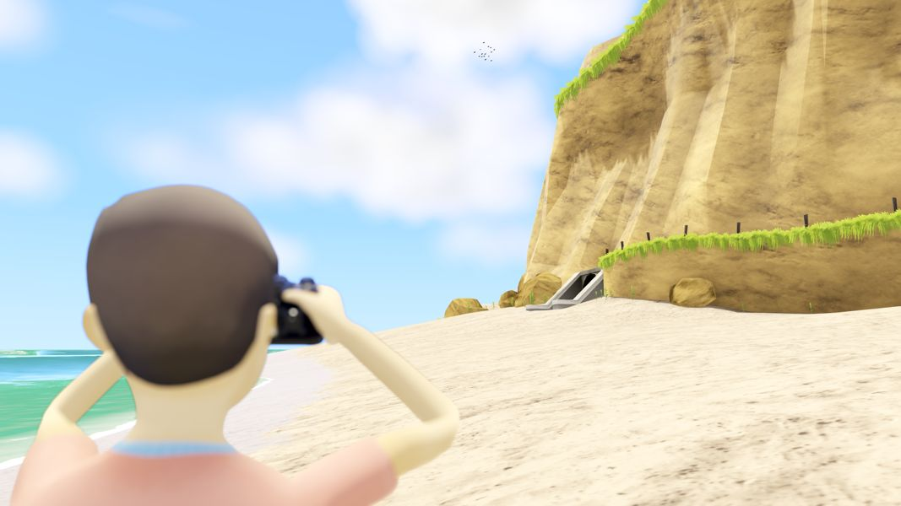

FOMOGRAPHY - A Postmortem
FOMOGRAPHY has been a big part of my life for the last 6 and a half years. It’s ny far the largest solo project I’ve ever completed, and it was all done on a zero-dollar budget. It wasn’t a huge success from a financial viewpoint (not even close), yet it was a blast to make and brought many important game development lessons that will follow me into my future games.
This postmortem hasn’t been written for any particular audience. It’s mostly just a brain dump, or a personal debriefing. If you’re interested in how the game was made and what I have learnt, then read on!
Prototype
FOMOGRAPHY started off as a little tech demo back in 2019, as an attempt to kill time before and after my day job at GMG. Firstly, I whipped up a test environment scene that had a Nintendo 64-vibe, called the Lagoon, which later became the Waterhole in the final game. I also created a character, which later became the Fisherman. This was mostly to get some practice in Blender and to play around with retro aesthetics in Unity.
This all went well, but I needed some gameplay to throw in with it. I had fond memories of playing Pokemon Snap back in the day, and I thought “Making a camera doesn’t seem that hard, it’s just a render texture, right?”. Also, Pokemon Snap was still really popular, yet there were so few photography-oriented video games. Sounds like an untapped market, I thought. Both very funny thoughts in hindsight.
Pokemon Snap confined you to an on-rails system, enabling you to look around, but not freely move. This gave the game a very arcadey tone. The twist I was going to throw in was that you have full movement around the environment. Explore a 3D environment in first-person. See something cool? Whip out your camera and snap a photo. I thought this was a guaranteed winner, and I might’ve been right if it didn’t take so long to finish the damn game.
Soon enough, I got the basic camera system up and running, along with a basic character controller to move around. The first commit was made on 9th February, 2019.
Art & Tech
Unity was my engine of choice for FOMOGRAPHY since it was the one I had the most experience with. One goal that I had (and still have to this day) is minimizing dependencies. This is something that many find to be quite critical about, and is a very polarizing topic. I will probably talk about my opinions on the topic more in future, but regardless, it was a priority on this project and one that I don’t regret.
For the art style, I wanted to avoid full PBR textures. It’s too much work, too many assets to deal with, and it slows down the editor with asset importing and loading with scene changes. Besides, I’m not much of a texture artist, so I wanted to avoid texturing wherever I could. To get around this, I would need to go for a more stylized look.
Environments would use a specialized shader that would take in a single channel grayscale image. This is what I would call a “ramp map” (although maybe a “gradient map” would have been a better name). The material would also have 2 colors specified: ColorA and ColorB. A black pixel in the ramp texture would use ColorA, and a white pixel would use ColorB. With this a gradient could be created between the two colors. There is also a Power value that indicates whether it should lean more into ColorA or ColorB.
To create the ramp map, I would find a texture online (usually from textures.com), and then in Krita, convert it to grayscale, and then mess with the levels to intensify the whites and blacks.
With all this, I could have complete control over the color. Even better, I could reuse these textures and easily recolor them to fit the scene. I ended up with only a few dozen of these ramp textures in the entire project, yet they were heavily reused seamlessly. I always think that this was perhaps the smartest move I made throughout the entire development. Who knows how many hours this saved me.
I experimented with things like normal and occlusion maps, yet it didn’t seem to add much to the overall quality. There is also a hack to calculate the occlusion value based on the texture which helps the material work with the lighting (otherwise the scene looks gray), but other than that, it was quite a simple material.

Characters were all modelled and rigged in Blender. There’s not too much to write about this, although unlike the environment textures, I did need to paint the character textures myself. This was quite easy since it was mostly flat color with a little shading here and there.
The art was very slow to get started, yet once I got into the groove, I could spit out a new character model in a week, and a scene in 1-4 weeks (depending on the complexity). It was a grind, but it was super rewarding seeing progress constantly being made.
I created a tool to quickly create photo detection points on various types of objects. I ended up adding to this throughout the project, and there was much tweaking of the scoring system. I’ve got another post that goes into detail about this.
For character animation, I decided to go with a rather unorthodox approach. You see, I’m not a huge fan of animating in Blender. To be honest, a huge part of that is because I haven’t really given it a good shot. Another part, however, is that I saw it as a great opportunity to learn about IK and see if I could create a nice animation workflow all within Unity.
I created a 2-bone IK to use for the arms and legs, and a CCD IK for the spine. The head, hands and feet used a basic aim IK. It’s amazing how with just these basic building blocks, you can create a rather complex bipedal rig.
So the way character animation usually works is that animation artists use IK to create the animations, but then it’s baked down to simple bone transforms. I decided to go a different route and have the IK animations exported. It was a cool idea at the time, but I don’t think it was the right way to go. You’re more likely to run into weird IK glitches where arms or legs become momentarily disfigured. I managed to get around these without too much issue. The much larger problem was the performance impact. Performing IK often requires scaling the entire transform hierarchy multiple times just to figure out where something should be. This, combined with Unity’s usual slowness with transform hierarchies, multiplied by the number of characters on screen, was just an unsolvable performance nightmare. Thankfully it wasn’t too bad as the number of characters on screen at any given time is quite low, but I don’t think I’ll go this route in future projects.
Another issue with the IK were the tools I created. It was just clunky. This was mostly due to fighting with Unity. I’d like to blame this on Unity, but it was really just me pushing a square peg down a round hole.
A big aspect of FOMOGRAPHY were the cutscenes. This was the first time I had ever designed something like this, and it was an interesting challenge. The way I saw it, there were two situations I needed to solve:
- Basic cutscenes where dialogue boxes show and pause the cutscene until the player interacts.
- More animated cutscenes when a fixed-duration animation plays out involving actors, cameras, sounds and props.
I decided to solve these separately as it would be too complicated to merge them together.
For the basic cutscenes, I knew Unity’s coroutine system was perfect for it. Displaying a themed dialogue box was as simple as:
yield return Dialog.Talk(character, “Hello, there!”);
There were a bunch more functions like this to handle things like dialogue options, but they are all very simple. Setting up camera shots was also quite easy. I could just get the editor’s viewport camera in the right position, click a button to take a snapshot, fiddle with some depth-of-field sliders, then call something like this from the code:
shotWide.Apply();
Easy peasy.
The other benefit of using coroutines (as opposed to some sort of external scripting system) is that I have access to the entire codebase. Every now and then I would need to do something quite complex, like giving a prop from one character to another, or branching the cutscene based on complex conditions. Having everything on the C# side, I could just hook into whatever I needed to get the job done.
The downside to all this, is that it’s very messy. Very, very messy. It’s some of the ugliest code I’ve written. Thankfully, I got quite used to reading this very specific messy code, so it wasn’t too big of a deal.
For the animated cutscenes, Unity’s built-in animator wasn’t going to cut it, as I needed to reference any number of objects in the scene that could be anywhere in the hierarchy. I tried the Timeline package, but it just felt very overengineered and complex. So I went the reinvent-the-wheel approach.
I made my own timeline-like editor. I could access any game object in the scene and interact with it in various ways. Because I had direct access to the code, I could also greatly simplify certain things, like making characters walk/run around to specific points, triggering once-off animations, playing sounds through my custom sound manager. It was quite a bit of work to get up and running, but allowed me to do some really amazing cutscenes.
Having said that, I actually found I didn’t enjoy using this tool. It’s not that anything was wrong with the tool itself, I think I just hate keyframe animation. It’s a slow and tedious process. Perhaps I’ll tackle it differently in future projects.
One final issue that every cutscene programmer needs to face is cutscene skipping. It’s a tricky problem. What if the cutscene needs to move objects around? How do you update their state at the end? What if the player needs to make a dialogue choice at some point? Most just don’t allow for cutscene skipping. It’s understandable when you look at it from a technical point of view. I decided to solve it by just fastwarding until either the cutscene ends, or a dialogue choice appears. I originally hid it behind a black screen, but I thought it was quite nice to watch it, so I left it in. Also, cutscene skipping is a lifesaver when it comes to testing!
Grass is always a pain to render. I originally just had a texture on the ground. It looked flat and dull. I tried adding some billboarded meshes scattered around and it just felt like a big arrow pointing out how flat and crappy it looked. I tried adding way too much billboard meshes and… it looked kinda awesome. But then the performance tanked. This took me on a journey where I learnt that Unity’s GameObjects are pretty horrible for performance. For every renderer, Unity needs to do all sorts of material, mesh, culling, and distance checks just to get static batching working. LODs don’t make the situation any better since it just adds more checks and splits up batching. When you have fewer meshes with high polygon counts, Unity’s way of doing things is quite nice, but when you want to go a little crazy with the object counts, you need to roll your own tools. Thankfully, Unity caters for this.
I created my own object painting tool. It used it not just for grass, but stones, bushes, moss, and more. Instead of creating GameObjects for each instance, it would instead add it to a list of structs which could be stored very compactly. This reduced the scene size massively (sometimes x10 or more). To do the actual rendering, I first tried using Unity’s Graphics API calls with instancing. The performance was much better than using GameObjects, but was still way too slow. I then tried making a mesh during Awake() calls to merge all of the meshes into a single Graphics call. Due to the grass being relatively-low poly, the meshes would be well under 100k triangles. The performance was awesome! It had very little impact on FPS.
You might think it’s bad because it’s not doing frustum culling, yet it would seem that frustum culling checks get diminishing returns with high mesh counts.
The game features a dynamic day/night cycle to allow for ever-changing photo opportunities for the player. I came up with a few tricks to help the game design, such as making daytime go longer than nighttime (player’s won’t want to spend so long in the dark), and making the sun rotate around the Y axis a little bit each day (so that every day the lighting looks a little different).
There was also a dynamic weather system. There’s not so much to talk about with this since it works the way you would expect, but I need to talk about what was perhaps the biggest graphical ordeal of the project: the clouds.
There’s so many ways to do clouds, and they all suck. You can bake it into the skybox, but then it’s not dynamic. You can also try a raymarched post process effect. If you ever see really awesome clouds in a modern game, they are probably doing it this way. The downside is that it can be very fiddly to get it to look right, but more importantly, being a post process, it has a huge impact on performance at higher resolutions. I wasn’t able to get a reasonable framerate with it at 1080p, even after downsampling (which results in lots of shimmering artifacts). It just wasn’t the way to go.
Instead, I took a different approach. I wrote a compute shader that would clump together billboard quads (like particles, although it wasn’t using Unity’s particle system), and would animate these clumps over the sky. Depending on the humidity, it would blend the clumps in and out while scaling the overall clump size. This gave me complete control over the behaviour of individual clouds, their colors, and also the number of particles being rendered at any time.
Doing this is great, but performance suffers with too many clouds. Without enough clouds, the sky can look a bit too patchy. To get around this, I added a flat mesh for the top layer of just a basic tiling noise texture that blends in. With all that, and some skybox and lighting color changes, you can get really great results without too much of a performance hit. I was quite happy with how it turned out.
With all that said, I don’t think I’ll be having dynamic weather systems in any of my future games. It’s not so much because it’s hard, more that it doesn’t seem worth it in hindsight. The clouds alone are enough to deter me trying this again.
One final thing I’d like to talk about regarding art & tech, were the woes of dealing with Unity’s rendering pipeline. I started the project using the legacy renderer. It was being phased out at the time (this was 2019-2020), so I naturally tried URP. It really, really sucked. There were bugs and glitches everywhere. It was really shameful that Unity would consider it ready for use at the time. I went back to the legacy render for a while, then I started to run into some serious issues with transparency. Transparency is the devil of graphics rendering. There’s no right way to do it. And the fact that Unity gives you very little control over it only makes things worse. After a while, I decided to give URP another crack. It still sucked. I tried HDRP. It also sucked (and was also just the wrong tool for the job in general).
I conceded and told myself that if anyone ever complained about weird transparency bugs, I would just blame it on Unity. I stand by that assessment even now.
Since then, URP has come a long way. I have used it on other projects, and even though it is still far from perfect, it is very usable. The whole render pipeline situation in Unity is a catastrophe, and is something that has pushed me to strongly consider moving elsewhere to do my game development. But that’s a rant for another time.
Music
Being an avid pianist for the last 20 years, I’m always trying to find uses for the musical doodles I come up with, and FOMOGRAPHY was a perfect excuse. All of the music was made with LMMS (a free and open source DAW). I’m not a professional composer, nor audio engineer, so I knew I wouldn’t be writing any award-winning tracks. Regardless, I think the soundtrack ended up being one of the most successful parts of the game (something that reviewers seem to agree with).
Due to having large environments, I didn’t want to have overly repetitive music, so I adopted a technique that was used in Banjo-Kazooie, where going to different locations within an environment would trigger different melodies, chords and instruments.
For example, when you first enter the Plains (the first outdoors environment in the game), there is a slow sweeping piano (inspired by Breath of the Wild’s piano). This moment is special because it marks the first moment of complete freedom for the player. When walking down the trail, the music changes to some bouncy plucked string, as though you’re embarking on a new big adventure, full of enthusiasm. When arriving at the rusty metal junkyard, the music changes to metallic percussion.
These were all made by making a basic outline of a song that contains only basic chords, then layering the different styles over the top. Transitioning from one style to another is really simple and always works. Even when playing all of the styles at once, it all works together without clashing.
Another part of the music I was really happy with was the main menu theme. The melody consists of a single note jumping up and down an octave at a very regular interval. This overly-consistent beat is made to replicate a clock ticking, which is a big motif for the Faceless character! He has a clock in his room that he has placed a cloth over. He doesn’t want to know the time. He wants time to stop, yet the ticking sound can still be heard, because time never stops. The accompanied music instills the sense of pensive tension that Faceless is feeling.
Identity Crisis
After more than 18 months in development, hopes were high, and progress was coming in fast. It seemed like nothing could stop me from finishing this destined masterpiece. And then New Pokemon Snap was announced.
I can’t lie, this hit hard. My motivation hinged on the idea I was creating something new and special, but I wasn’t. My little photography game inspired by Pokemon Snap could never compete with a literal sequel to Pokemon Snap. They had over 20 years to make a sequel! Why did they sit around waiting for me to start making a photography game before announcing it?
I couldn’t do any work for a few days. Even after jumping back in, I was very sad on the inside. Should I keep at it and hope for the best? Should I cut my losses and start a new project? Should pivot into something radically different?
I didn’t have an answer. I just kept working on it.
What hurt more, was that this wasn’t the last time this would happen. Alba: A Wildlife Adventure, Umurangi Generation, Viewfinder, and more. They all hit hard. It turned out I wasn’t the only one with the idea to create a photography game, but it did seem I was late to the punch.
Each time, I would take a day or so off just to gather myself. And each time, I would jump back in and keep making stuff. I don’t know whether this was a good or bad thing at the time, although I think, over the long run, the harshness of commercial art creation was solidified in me. I grew a tolerance, a strong sense of perseverance, that I never knew I had. Maybe I was so tolerant, it had grown to a stupid level. Regardless, it’s actually one of the things I’m most proud of. It’s the whole “You don’t lose if you get knocked down, you lose if you stay down”.
Grinding Through Lockdown
Living in Melbourne, Australia through COVID-19 was a hell of a time. We were constantly on the world-wide news due to our state government forcing lockdown after lockdown. Many saw them as a relentless burden. For me, it was an oasis. Having an excuse to stay inside at home was the one thing I needed to get the game out the door.
I developed a little psychological trick to help me stay in the zone and avoid burnout. The basic idea was to have separate Brendans. You see, Programmer Brendan worked over the weekends, and Artist Brendan worked before and after work hours during weekdays. Designer Brendan and Composer Brendan would come in on a contractual basis. This might all sound silly, but it was essential in ensuring that the game was constantly being worked on, with no part of the game being left behind. It was so effective that I’m still using the strategy to this day.
A large problem that was getting progressively out of hand was the scope of the game. The game was made to be a sort of segmented open world, with loads of characters, and lots of wildly different things to do with the camera. You could drop your camera on the ground, or throw it over a wall. You could ride horses while taking selfies. There was an underground railway system to help you get around the world faster. It may sound like a lot, yet I was able to get the game “functionally complete” from start to end, with a very prototype-ey aesthetic. I recall having a little playtest of the game, trying to play from start to finish for the first time. I didn’t get far before realizing that the whole thing was rubbish. The game felt so unfocused and all over the place. On top of that, I had estimated that it would take many more years to get it all in a polished state. It was never going to work. Then came the Great Pivot.
Almost everything I just described was culled. Characters were merged together or removed entirely. The core game mechanics were too plentiful. It’s a photography game after all, it doesn’t need all of these bells and whistles. The player just needs to be able to take some nice photos and have something to do with it. Riding horses? What the hell was I thinking!?
I adopted a new mantra: Do more with less. I wanted to have less mechanics, but do more useful things with them. I wanted a smaller world, but with more things to do in it. I wanted less characters, but more meaningful moments with them. This was where FOMOGRAPHY really came to life. The story, the characters, the world, the mechanics, it all started making cohesive sense.
It’s funny that removing scope from your game is always emotionally difficult, yet it’s something that you will never regret.
The Narrative And Themes
At the time I was making big changes to the game and searching for a narrative, we had just found out my grandmother had dementia.
For those that don’t know, dementia patients experience severe forgetfulness. At first it’s something simple. “Where did I leave my keys?” Then it gets worse. “Someone’s in my house moving my cups around!” Then it gets worse. “I don’t know who you are.” And it gets even worse. They forget to speak, then how to walk. Most dementia patients end up succumbing to infections due to their failing immune system. Many are lost to a bad fall, and others from choking on their food. There’s no cure and no easy way out.
I went to visit my grandmother around this time. It was the first time I had seen her in a few years. She was unrecognisable. She had lost so much weight, and had a permanent look of shock on her face. She didn’t resemble the person I remember, and I didn’t resemble anyone that she recognized. It’s a scary thing to watch, and we can only assume it’s far more terrifying to experience.
After going through all of this with my grandmother, I wanted to make FOMOGRAPHY focused on this. It’s a topic rarely explored in art in general, let alone video games.
It also gave me an opportunity to be a little vague about certain things. The characters don’t need names because the main character has forgotten them. I could squash together locations, duplicate them, and even get a little fantastical with environment design. The story could also be presented much more loosely. Going in this direction resulted in a very non-linear story that is told not just through dialogue, but in the environment and themes.

FOMOGRAPHY doesn’t drip feed the story. The player is required to pay attention to truly understand it. Before the final scenes in the game, there is a simple puzzle. There are statues lined up on a ring that the player can rotate. The solution requires the player to identify which characters are which throughout the different times presented in the game. I always loved this puzzle. It’s never explained to the player, yet if the player understands what has been going on throughout the game, it should invoke a classic a-ha! Moment.
The ending of the game was very personal for me. We use photography as a means to relive memories of the past. They are, for better or for worse, only a snapshot, a single point-of-view, of that memory. This means that details are forgotten and are free to be filled in with our imagination. Once again, for better or for worse. I love this theme because I find so many of my greatest memories are ones not found in reality, but instead, in my head. And maybe that’s okay.
If only there was a player that played to the end.
Coming Up With A Title
I hate naming things. It’s why I named all of the characters with generic names, such as the Fisherman, the Zoologist and the Constable (although that worked well with the themes of dementia). Unfortunately, I can’t use the same strategy for the title of the game.
FOMOGRAPHY doesn’t exactly roll off the tongue. It’s hard to spell, hard to pronounce, and isn’t very catchy. The only thing it has going for it is that it’s a nice play on the acronym FOMO (Fear Of Missing Out), and photography. I’ve always disliked it, but was never able to come up with anything better.
Some of the other names I was playing with were:
- Through the Viewfinder – A nice play on ‘Through the Looking Glass’, but was kind of obliterated when another game called Viewfinder was released (which is a much nicer name btw).
- FOMO - A Photography Adventure – This is more mainstream, but I felt it didn’t reflect on the themes so well.
I ended up conceding, and just went with FOMOGRAPHY. Afterall, it’s just a title, right?
The Big Bug Crunch
One of the big mistakes I made throughout development was not playtesting enough. This is kind of embarrassing to admit, but I didn’t do a full game play test until the game was pretty much done and polished. So when that time came around (June 2023) I thought I’d make up for it by having a really long thorough play through the entire game.
It was buggy as hell. In fact, I had to stop playing every 10-20 minutes to fix game-breaking bugs. Anything that wasn’t game-breaking, would go on the list to fix later. It took more than a week to get to the end of the game and, I kid you not, I had around 600 bugs on my list.
This was a weird moment for me. Most people would see a list that large and start procrastinating, or fantasizing about starting their next project. For some unbeknownst reason, this didn’t happen to me. I was looking forward to jumping in and seeing how much I could knock off. A brief look through the list made it clear that most of them were quick little things that would take no more than a few minutes, so I thought I could get through them pretty quick. And I was right!
I turned the music up, put my head down, and crunched through dozens of bugs per day. It was only a few weeks later that the list had dried up, and I was ready for another QA playtest. The next one went similarly. Game-breaking bugs every now and then, and loads more bugs being added to the list, but it was better! I got through the game faster, and my bug list had (only) a few hundred items on the list!
This happened over and over again. Playtesting, fixing bugs, playtesting, fixing bugs. I kept this up for (according to my commit history) about 5 months. I’m not sure how I kept my sanity through that. Somehow I have fond memories of this period.
It got to the point where I could play through the entire game from start to end in just a few hours, and come across no more than a handful of bugs. This was when I knew it was time to move onto the most dreaded part of game development.
Marketing And Looking For A Publisher
I’ve never been a people-person, so the idea of marketing scares the shit out of me. Going from a nobody to a somebody was never going to be easy. But I didn’t come this far just to chicken out. I spent a few weeks consuming as much information as possible about marketing. GDC talks, marketing FAQs, general marketing books, endless reddit posts, postmortems for other games. I wound up with a huge document full of all the knowledge I had accumulated. I put together a rough plan and started to execute it.
Over the course of a few months, I threw together an announcement trailer, made consistent twitter and reddit posts, called in a few favors from friends and with all this effort, the big reward was… nothing. I made some non-dedicated twitter followers, but that’s the most optimistic take I can give. What did I do wrong? I dunno. What would I do differently next time? I dunno. I was ready to throw some money at it, but where would I throw it? Ad services never seemed to be worth the investment.
I tackled marketing as an engineer, it’s the way I think. Marketing, as it turns out, is not engineering. I admitted defeat. I’m never going to be able to pull off a successful marketing campaign. Not on my own.
At this point, I started to lose interest in the financial success of the game. It was made on a zero-dollar budget, I still had my day job, I learnt a lot in the process, and had fun. Why does it need to make money? Sure, I want it to make money. Money is always good. But I didn’t need money.
Regardless, I wanted to give it one more shot from a very different angle, just to squeeze a bit more learning experience out of it. I started to look for a publisher.
I whipped up a pitch deck with some steam keys, and sent it out to over 50 publishers. Only a quarter of them got back to me, and of those that replied, they all declined. Except for two.
One was on the other side of the world, not very english-focused, and only seemed interested in porting. The other was DANGEN Entertainment, a Japan-based, yet globally focused indie publisher. They were willing to go the whole mile and take a bet on me. I was nervous, yet excited to see how it would go.
Releasing With A Publisher
I got the impression that I kinda caught DANGEN by surprise. They had a backlog of other games they had to get through to release, so I had quite a bit of down time away from FOMOGRAPHY. After a few months, things started to ramp up.
Their QA team came in hard. QA teams always amaze me at the things they find. They’ll send you a video with the most crazy intricate reproduction steps, and you can’t help but think “How the hell did they find this?” I thought the game was in pretty good shape before handing it to them. They proved me wrong.
When I wasn’t fixing bugs for QA, I was instead putting together promotional art. I didn’t handle this very well. In hindsight, I should’ve put more effort into making super high resolution, high quality images that could be flexibly laid out. It’s something you don’t realize until you’re in the thick of it, but every store on every platform wants 10+ images all with different aspect ratios and resolutions. It’s a nightmare, yet can be made much easier with early planning.
There were also the trailers. I ended up making 4 trailers, only 3 which saw the light of day (the first one I made was quite crappy, so I was happy to chalk it up to a learning experience). Trailers take a lot of time. For future games, I’d like to focus on making simpler and shorter trailers. It’s just not worth the effort, and the outcome is much the same.
As 2025 came around my partner and I had a baby. This changed how I managed time quite a lot. I didn’t have as much opportunity to work on this project, and even when I did, I was quite sleep deprived. Thankfully, most of it was done at this point.
With the release day coming up, most people get anxious and excited. If I were to describe FOMOGRAPHY’s release, I would call it boring. Not because it wasn’t an exciting time, but because there wasn’t much for me to do. Release day was just a normal day for me. I can’t even remember it as I’m typing this, and it was only a few weeks ago. It was probably just a normal day going to work and taking care of the baby. As dull as it might sound, this goes to show the big effort the publishers put in behind the scene. It definitely wouldn’t have been so relaxed without them.
Post Release
When the game was released on 29th May, 2025 to Steam, Xbox One and PS5, there was no bang. Barely a fizzle. I can’t talk about the financial side of things much, but suffice to say, I will not be relocating to a mega-yacht anytime soon. So where did I go wrong?
It hurts to admit, but it’s obvious that the game visually isn’t quite on par with the market. I don’t think it’s a horrible looking game. However, the average game getting released looks pretty damn good. We all like to think that a great game will sell itself regardless of visuals, yet the reality is that visuals are always an important selling point. With FOMOGRAPHY, it was really just a case of biting off more than I could chew. I’m a competent programmer, but my art skills aren’t quite on par. This isn’t to say I can’t make a good looking game, just that I need to be a lot more strategic and economical with the skills that I have. A simpler, more stylized art direction could have helped greatly with this.
Early reviews also state that the beginning is too slow. This was not news to me, and was something I was always concerned about. It can take players an hour or more to get outside of the starting town, which is where the game really comes alive. There were logical reasons for doing this (mainly teaching the player everything they need to know). It’s something that was a byproduct of too many large structural changes to the game halfway through development. It could have been rectified, yet not without adding an extra year or two to development. At some point you just have to live with it and move on. Hopefully I do better at this in the future.
Another pain point to the games success is just the overall marketability. How do you market a game that’s strengths are more on the philosophical writing side? That kind of thing is easier with books, yet I’ve never seen it pulled off with video games. That’s not to say there aren’t great philosophical games (SOMA and The Talos Principle come to mind), just that the philosophical elements weren’t what drew in the initial crowd. The thing I had to draw in the crowd (photography) is something that has been done before. Hell, almost every big budget game is coming out with a photo mode nowadays. I think FOMOGRAPHY made a lot more sense back when it was first conceived, yet doesn’t stand out 6+ years later.
Perhaps that’s the real issue; The game took too damn long to make. That’s definitely something I want to improve with future games.
The unsuccessful sale numbers were not unexpected, yet I am still very pleased with the experience as a whole. A lot of good came out of it. Not only did I kill a lot of time, while challenging myself and having fun, but I also learnt some awesome things along the way. I plan on releasing more games in the future (the next one is already in the works). I will definitely be building on everything that I’ve learnt from FOMOGRAPHY.
I’m very proud of myself that I’m eagerly jumping into the next game with just as much excitement as the first. I know many developers would call it quits after this. The fact is, I can’t imagine a life where I’m doing anything else. Success doesn’t really matter when you’ve found something that makes you genuinely happy.